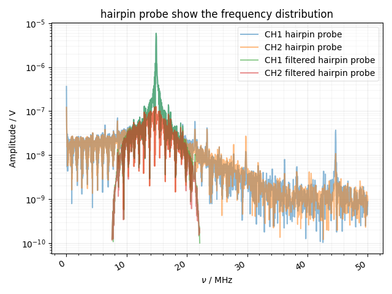
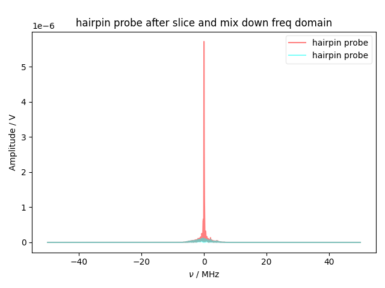
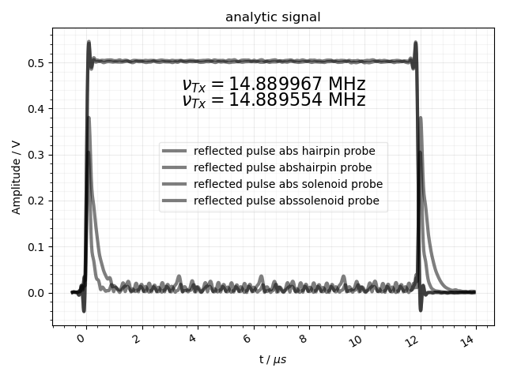
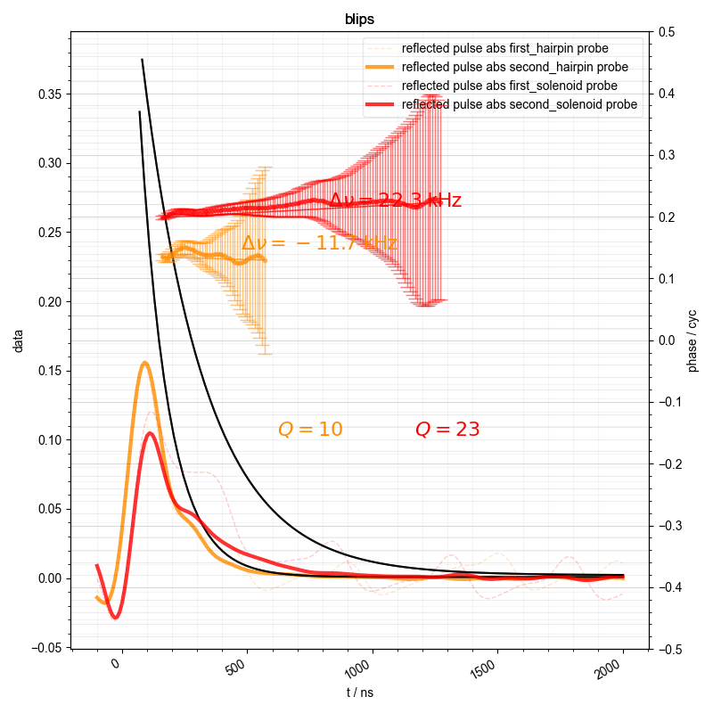
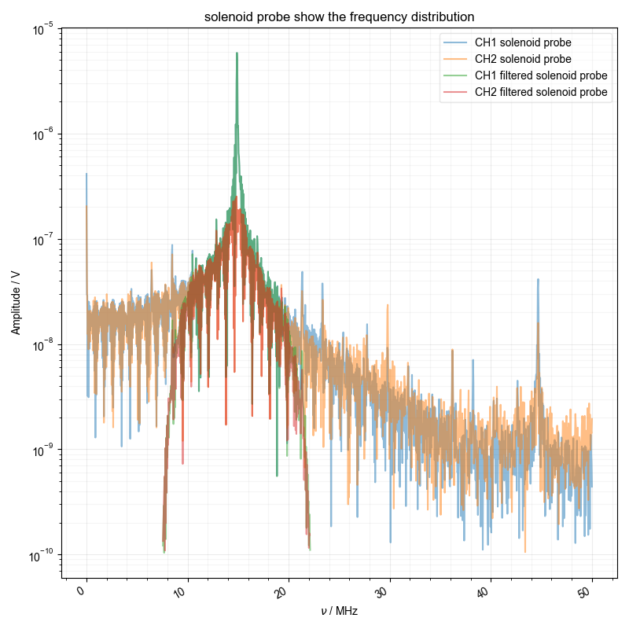
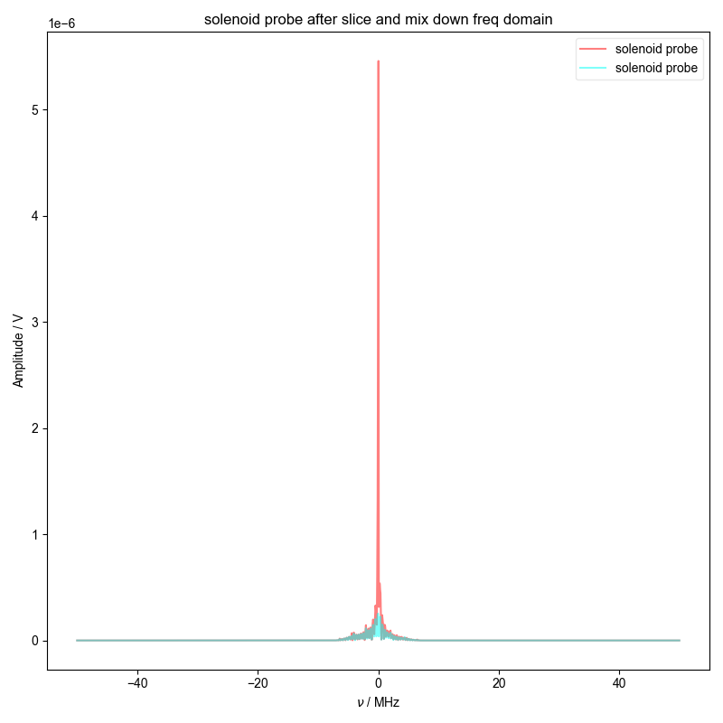

Note
Go to the end to download the full example code
Process a square wave reflection¶
Processes a square wave reflection in order to calculate the Q of a NMR probe. Optional to show the phasing and real on top of the fitted square wave reflection.
- 
- 
- 
- 
- 
- 
---------- logging output to /home/jmfranck/pyspecdata.0.log ----------
--> proc_square_refl.py(24):pyspecdata.core <module> 2024-10-13 08:41:54,039
INFO: processing dataset hairpin probe
You didn't set units for ch before saving the data!!!
You didn't set units for t before saving the data!!!
logarithmic
--> analyze_square_refl.py(123):pyspecdata.core analyze_square_refl 2024-10-13 08:41:54,621
INFO: frq: 14889966.915265452
--> analyze_square_refl.py(153):pyspecdata.core analyze_square_refl 2024-10-13 08:41:54,803
INFO: the amplitude is 0.5041899787959184
{A, R}
{\bf Warning:} You have no error associated with your plot, and I want to flag this for now
/home/jmfranck/git_repos/pyspecdata/pyspecdata/core.py:8620: Warning: You have no error associated with your plot, and I want to flag this for now
warnings.warn(
--> analyze_square_refl.py(225):pyspecdata.core analyze_square_refl 2024-10-13 08:41:55,100
INFO: output: {'A': 0.6191578695480574, 'C': 0.0007775310076085551, 'R': 8731153.71929354}
--> analyze_square_refl.py(226):pyspecdata.core analyze_square_refl 2024-10-13 08:41:55,104
INFO: latex: $f(t)=0.62 e^{- 8.73\times 10^{6} t} + 0.00$
/home/jmfranck/git_repos/pyspecdata/pyspecdata/core.py:9166: RuntimeWarning: invalid value encountered in sqrt
return np.sqrt(arg)
--> analyze_square_refl.py(240):pyspecdata.core analyze_square_refl 2024-10-13 08:41:55,114
INFO: -11728.316475972004
/home/jmfranck/git_repos/pyspecdata/pyspecdata/core.py:1342: UserWarning: marker is redundantly defined by the 'marker' keyword argument and the fmt string "." (-> marker='.'). The keyword argument will take precedence.
return ax.errorbar(*tebargs[:-1], **tebkwargs)
/home/jmfranck/git_repos/pyspecdata/pyspecdata/core.py:1568: UserWarning: linestyle is redundantly defined by the 'linestyle' keyword argument and the fmt string "k--" (-> linestyle='--'). The keyword argument will take precedence.
retval = myplotfunc(*plotargs, **kwargs)
--> proc_square_refl.py(24):pyspecdata.core <module> 2024-10-13 08:41:55,290
INFO: processing dataset solenoid probe
You didn't set units for ch before saving the data!!!
You didn't set units for t before saving the data!!!
logarithmic
--> analyze_square_refl.py(123):pyspecdata.core analyze_square_refl 2024-10-13 08:41:55,627
INFO: frq: 14889553.824459042
--> analyze_square_refl.py(153):pyspecdata.core analyze_square_refl 2024-10-13 08:41:55,709
INFO: the amplitude is 0.5013108588730282
{A, R}
{\bf Warning:} You have no error associated with your plot, and I want to flag this for now
--> analyze_square_refl.py(225):pyspecdata.core analyze_square_refl 2024-10-13 08:41:55,851
INFO: output: {'A': 0.5118213811859424, 'C': 0.0021007698742564924, 'R': 3969130.4825602476}
--> analyze_square_refl.py(226):pyspecdata.core analyze_square_refl 2024-10-13 08:41:55,853
INFO: latex: $f(t)=0.51 e^{- 3.97\times 10^{6} t} + 0.00$
--> analyze_square_refl.py(240):pyspecdata.core analyze_square_refl 2024-10-13 08:41:55,867
INFO: 22313.576370994408
1: hairpin probe show the frequency distribution |||MHz
2: hairpin probe after slice and mix down freq domain |||('MHz', None)
3: analytic signal |||μs
4: blips |||ns
5: solenoid probe show the frequency distribution |||MHz
6: solenoid probe after slice and mix down freq domain |||('MHz', None)
from pylab import *
from pyspecdata import *
from pyspecProcScripts.third_level.analyze_square_refl import (
analyze_square_refl,
)
from pyspecProcScripts import *
init_logging(level="debug")
rcParams["image.aspect"] = "auto"
# sphinx_gallery_thumbnail_number = 3
with fl_mod() as fl:
for filename, expno, dataset_name in [
("210125_sqwv_cap_probe_1", "capture1", "hairpin probe"),
("210111_sqwv_sol_probe_1", "capture1", "solenoid probe"),
]:
logger.info(strm("processing dataset", dataset_name))
d = find_file(
filename, exp_type="ODNP_NMR_comp/test_equipment", expno=expno
)
d.set_units("t", "s").name("Amplitude").set_units("V")
d.setaxis("ch", r_[1, 2])
d.set_units("t", "s")
analyze_square_refl(
d,
label=dataset_name,
fl=fl,
show_analytic_signal_phase=False,
show_analytic_signal_real=False,
)
Total running time of the script: (0 minutes 10.953 seconds)